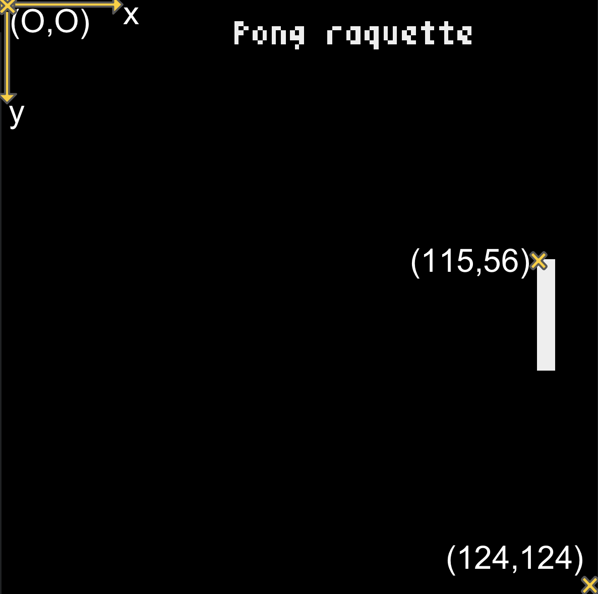

pygame les bases
Pygame
Pygame est un module python qui offre des outils permettant de créer des jeux. C’est un programme libre, et opensource.
Le jeu Pong SOLO
Dans cette première partie, nous allons nous familiariser avec l’environnement de developpement et la programmation de type evenementielle, en temps réel. Dans ce type de programmation, il faudra afficher et mettre à jour l’image en fonction des actions du joueur, et lire régulièrement les états des touches du clavier pour detecter les appuis par le joueur.
Programmons ainsi un grand classique des jeux d’arcade: PONG
Dans la variante proposée ici, le jeu se jouera en SOLO, le but étant de renvoyer la balle vers le bord gauche de l’écran.
Dessiner la fenêtre graphique et placer un objet
Commencer par créer un nouveau projet (nouveau fichier: pong.py).
Le programme suivant va dessiner une raquette (un rectangle blanc vertical) dans une fenêtre graphique de dimension 512 x 512 pixels.
Les programmes python avec le module pygame ont toujours à peu près la même structure:
-
les premières lignes contiennent les extensions à ajouter au langage python.
-
Ajouter ensuite
pygame.init()pour initialiser les modules importés… et terminer le programme parpygame.quit()pour quitter la fenêtre pygame. -
l’instruction
fenetre = pygame.display.set_mode((512,512))va créer une fenêtre graphique. -
La boucle
while continuer:c’est ici que l’on va mettre les instructions du jeu. Le booléencontinuerva permettre de gérer la fin de l’execution du programme lorsque l’on ferme la fenêtre avecif event.type == QUIT: continuer = False -
Il s’agit d’une programmation de type evenementielle: il faut tester à chaque nouvelle itération dans la boucle
whilequelle est la touche sur laquelle le joueur a appuyé, et modifier le décors en conséquence.
Pour dessiner un rectangle de 16 pixels en largeur sur 128 en hauteur, il faudra utiliser la fonction pygame.draw.rect. Les 3 paramètres de la fonction sont:
- le nom donné à la fenêtre pygame:
fenetre - un tuple constitué des 3 valeurs en code (rouge,vert,bleu):
(255,255,255) - un tuple constitué de 4 valeurs: les coordonnées x,y du coin supérieur gauche du rectangle, sa largeur et sa hauteur:
(450,r1_y,largeur,hauteur)

exemple de rectangle de dimension 4px x 24 px
Le repère (x,y) de la fenêtre graphique a pour origine (0,0) le coin supérieur gauche. L’axe croissant des x est dirigé vers la droite, et celui des y vers le bas.
Ainsi, pour positionner un rectangle blanc de dimension 4 x 24 à la position A(115,56), la fonction s’écrirait pygame.draw.rect(fenetre,(255,255,255),(115,56,4,24)).

position du coin superieur gauche du rectangle en (115,56)
Contrôler le deplacement d’un objet
On veut deplacer l’objet à l’aide des touches du clavier UP et DOWN (flèches vers le HAUT/BAS):

contrôle de la raquette du jeu PONG
Il faudra appliquer les modifications suivantes:
Rappelez vous que la coordonnée $y_A$ du rectangle est stockée dans une variable: r1_y. La valeur de cette variable est déclarée au debut du programme. Notez que pour l’instant, la raquette reste fixe, et qu’elle n’est pas contrôlable.
Pour lire les touches du clavier, il faut contrôler les evenements, c’est à dire les interactions (clavier, souris).
Pour vérifier si une touche du clavier a été enfoncée, on place l’instruction event.type == KEYDOWN dans le programme:
Et enfin, pour savoir si cette touche était la flèche de direction vers le haut, c’est event.key == K_UP
Comment traduire en python: déplacer vers le haut?
Il faudra modifier la valeur de la variable r1_y… Pour déplacer la raquette de 8 pixels vers le haut, choisir la bonne proposition parmi les 2 suivantes:
r1_y = r1_y + 8r1_y = r1_y - 8
A cette étape, le script du programme est alors:
Que reste t-il à faire?
- Si vous executez votre programme, vous pouvez voir votre raquette disparaitre par le bord supérieur de la fenêtre. Il faudra rajouter une condition pour modifier
r1_ysir1_y >0. Sinon ne rien faire. - Et si l’on veut faire descendre cette raquette? Utiliser alors
if event.key == K_DOWN:et programmer le deplacement vers le bas. Ici aussi, ajouter une condition surr1_ypour que la raquette ne disparaisse pas par le bord inférieur…
Enfin, lorsque tout fonctionne, vous allez vous interesser au programme de la balle rebondissante: suite du TP
Liens
- site zonensi
- site de Gilles Glassius
- Pygame: Documentation officielle